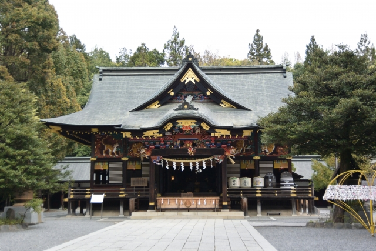

秩父神社
ユネスコ無形文化遺産にも登録されている「秩父夜祭」。秩父神社の例大祭として毎年12月2日と3日に開催し、京都祇園祭、飛騨高山祭と並ぶ日本三大曳山祭の1つに数えられています。夜祭とはいいますが、3日の昼間も笠鉾や屋台舞台など見どころがいっぱい。クライマックスの3日夜に見ることができる屋台や山車の曳き廻しは圧巻です。
埼玉の冬は幻想的なイルミネーションや氷の芸術、温泉など魅力が満載。
心も身体も温まる冬の体験をお届けします。
イルミネーション・氷柱ライトアップ・冬のイベントをご紹介します。
氷柱・温泉・冬ならではの景観が楽しめる場所を案内します。
画像素材：photoAC（https://www.photo-ac.com/）
ユネスコ無形文化遺産にも登録されている「秩父夜祭」。秩父神社の例大祭として毎年12月2日と3日に開催し、京都祇園祭、飛騨高山祭と並ぶ日本三大曳山祭の1つに数えられています。夜祭とはいいますが、3日の昼間も笠鉾や屋台舞台など見どころがいっぱい。クライマックスの3日夜に見ることができる屋台や山車の曳き廻しは圧巻です。
秩父の玄関口「西武秩父駅」に直結した複合施設。温泉・フードコート・土産処がそろう観光拠点です。冷えた体を駅チカでしっかり癒せます。
「三十槌の氷柱（みそつちのつらら）」は、秩父三大氷柱のひとつで唯一の“天然氷柱”。湧き水からつくられる自然の氷柱とライトアップは必見です。